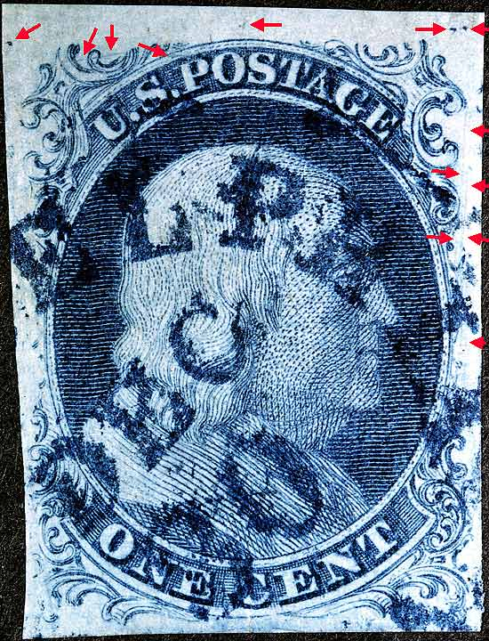
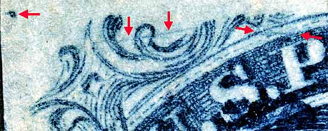
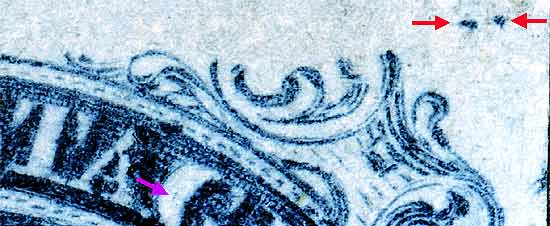
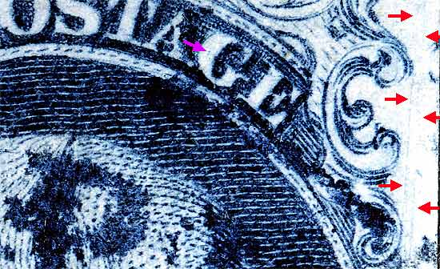

1¢ Franklin Issue of 1851-1857, PLATE 1 EARLY Position 4L1E (Scott #7) |
| Scott #7 Blue, Relief T, Type II Only Issued Imperforate Other marks of note not shown in the Ashbrook/Neinken plating diagrams. A near-vertical scratch in the LL plume remains appears as a blurry line of color. This mark has been confirmed on another copy of this position. |
|  |
| Figure 1. (Below) Close up detail of plating marks above the "P" of POSTAGE. There is also a scratch cutting across Ornaments T and U. The latter marks are not shown in the Neinken plating drawings but, are significant enough to warrant notice. The Guide dot to the left is part of Position 3L1E.
 |
| Figure 2. (BELOW) Close up detail of heavy guide dots above Ornament L. The faint vertical dash of color in the G of POSTAGE is not known if consistent. A horizontal smudge dash of color above Ornament W (not arrowed) has been confirmed as consistent.
 |
| Figure 3. (BELOW) Detail of the long vertical plate scratches running along the upper right margin. The plating diagrams show this as a single scratch but in fact there are 2 parallel scratches.
 |
DISCLAIMER and COPYRIGHT INFORMATION: Thanks for visiting this site. I hope you learn something new as we are making new discoveries all the time. You, the visitor, have my permission to link to my pages and to share the INFORMATION with others. The images themselves fall under the fair use guidelines established by the United States Congress and Copyright law. Basically contact us before using. I also ask in return that you send me an e-mail if I have made a mistake, or have made some other technical blunder that in my rush to put these pages up would cause the visitor confusion. Please also visit my other website at www.slingshotvenus.com. and support the live music arts. While your there, be sure to purchase our music. There are not many philatelic rock stars around and we need all the help we can get. :-) I can be reached at: nerdman@ix.netcom.com UPDATE: 7.31.15 |